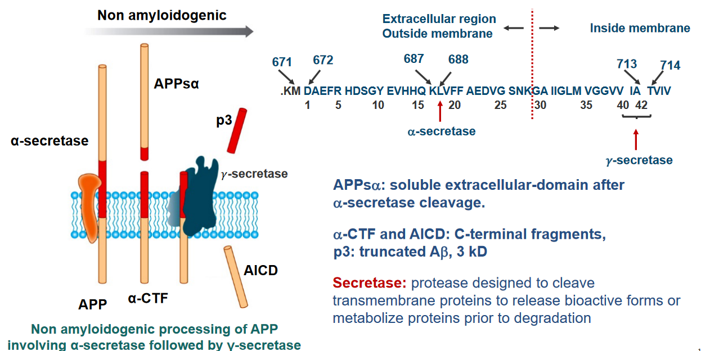
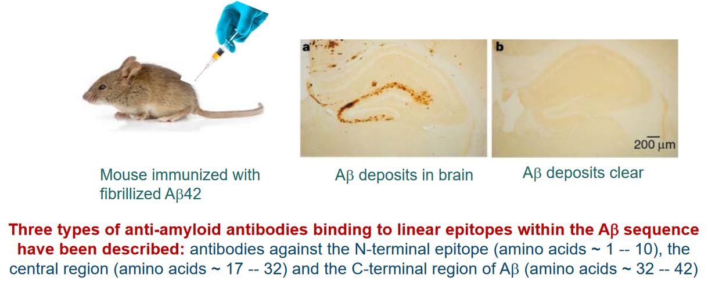

8 Alzheimer’s Disease
Alzheimer’s Disease (AD) is a long-term brain disorder that affects a lot of people, accounting for 60 to 70% of dementia cases. Dementia is a condition that makes it hard for people to remember things and think clearly. Around 26 million people are affected by Alzheimer’s.
One of the first signs of Alzheimer’s is short-term memory loss. This means that people with Alzheimer’s may have trouble remembering recent events or conversations. As the disease progresses, more serious symptoms show up.
In the later stages of Alzheimer’s, people may struggle with language, have trouble recognizing where they are, and experience a loss of control over their body functions. This can be really tough for both the person with Alzheimer’s and their loved ones. Unfortunately, in severe cases, Alzheimer’s can lead to death.
8.1 Factors Involved in Alzheimer’s Disease
8.1.1 Genetic Factors
Alzheimer’s Disease (AD) has different types, and one way to look at it is through genetics. This means that the disease can sometimes be linked to our family history, or it can happen without any clear family connection.
In cases where Alzheimer’s is passed down through families, specific genes are involved. Think of genes as instructions for our bodies. In familial cases, mutations (changes) in genes related to Alzheimer’s are usually found. For example, there can be mutations in the Amyloid Precursor Protein (APP) gene or in the presenilin 1 (PSEN1) and presenilin 2 (PSEN2) genes. These gene mutations are often responsible for the majority of cases where Alzheimer’s is inherited within a family.
However, it’s important to note that the type of Alzheimer’s that runs in families is not very common. It’s considered rare, with fewer than 0.1% of people affected by this familial form of the disease.
8.1.1.1 Apolipoprotein E
When it comes to Alzheimer’s Disease (AD) and genetics, there’s another important gene to know about, called apolipoprotein E (APOE). This gene is connected to what we call sporadic cases of the disease. Unlike familial cases, where Alzheimer’s is passed down in families, sporadic cases seem to happen more randomly.
In the case of APOE, there is a specific version of the gene called APOE E4 allele, and having this version increases the risk of developing Alzheimer’s. If someone has one copy of APOE E4 (heterozygotes), their risk goes up three times, and if they have two copies (homozygotes), the risk increases by 15 times. Additionally, having APOE E4 can make Alzheimer’s start earlier, reducing the age of onset by 10 years.
Now, you might wonder how APOE E4 is involved in causing Alzheimer’s. Well, this gene plays a role in transporting cholesterol in the brain. But when it comes to Alzheimer’s, APOE E4 seems to act in a way that contributes to the buildup of a protein called amyloid β (Aβ). This buildup leads to the formation of plaques in the brain, a key feature of Alzheimer’s pathology. So, in a way, APOE E4 is like a “pathological chaperon” because it encourages the formation of these harmful protein deposits
8.1.2 Risk Factors
Alzheimer’s Disease (AD) is influenced by various risk factors beyond genetics. One important factor is the brain’s reserve capacity, which refers to its ability to handle damage or changes. When this reserve capacity decreases, it can make the brain more vulnerable to the development of Alzheimer’s.
Several health conditions and lifestyle choices can contribute to this decreased reserve capacity and increase the risk of Alzheimer’s. Vascular diseases, such as atherosclerosis (hardening of the arteries), coronary heart disease, and hypertension (high blood pressure), play a role. Other risk factors include hypercholesterolemia (high cholesterol levels), smoking, obesity, diabetes, and brain injuries. These factors can set off a chain of events that initiate the pathological cascade leading to Alzheimer’s.
On a positive note, there are actions individuals can take to reduce their risk of Alzheimer’s. Certain dietary choices, like consuming vitamins B12 and folate to control homocysteine levels, can be beneficial. Antioxidants found in vitamins C and E, as well as unsaturated fatty acids, are also agents that may help lower the risk of developing Alzheimer’s. So, by making healthy lifestyle choices, individuals can potentially reduce their risk of Alzheimer’s and support the overall well-being of their brains.
8.1.3 Amyloid Hypothesis
The Amyloid Precursor Protein (APP) is a gene located on chromosome 21. Interestingly, this gene is associated with both Alzheimer’s Disease (AD) and Down Syndrome.
In Down Syndrome, individuals have an extra copy of chromosome 21, which means they also have an extra copy of the APP gene. This genetic situation is linked to an increased production of a protein called amyloid beta (Aβ). High levels of Aβ can lead to the formation of plaques in the brain, which is a characteristic feature of Alzheimer’s.
What’s particularly notable is that individuals with Down Syndrome often show an early onset of Alzheimer’s Disease. The extra copy of the APP gene, along with other factors related to Down Syndrome, contributes to an increased risk of developing Alzheimer’s at a younger age in this population.
Plaques are abnormal deposits that form outside of nerve cells and are made up of a protein called amyloid beta (Aβ). These plaques are surrounded by structures called ‘dystrophic neurites,’ which are damaged nerve cell processes, as well as ‘reactive astrocytes’ and ‘microglia,’ which are types of support cells in the brain. The presence of these plaques is a characteristic feature of Alzheimer’s disease.
Tangles, on the other hand, are found inside nerve cells and are made up of a protein called tau. In Alzheimer’s, tau becomes hyper-phosphorylated, which means it has an excess of phosphate groups attached to it. This abnormal phosphorylation causes tau to clump together, forming tangles within the nerve cells. These tangles are another hallmark of Alzheimer’s disease.
8.1.4 APP Processing
The Amyloid Precursor Protein (APP) is a significant protein in the body, particularly in the central nervous system (CNS). It’s a large protein, made up of approximately 700 amino acids. The structure of APP includes a sizable extracellular domain, a transmembrane domain that spans the cell membrane, and a short cytoplasmic region inside the cell.
APP plays various roles in the body, contributing to essential functions like neuronal growth, transport, and signaling. Despite its importance, interestingly, mice that lack the APP gene seem to develop normally and exhibit no apparent abnormalities. This suggests that while APP has important functions, there may be redundancy or compensatory mechanisms in place in mice that allow for normal development even in the absence of APP.

After a specific cleavage by an enzyme called α-secretase, a soluble extracellular domain is produced, known as APPsα. This cleavage is a crucial step in the normal processing of APP.
Following the α-secretase cleavage, two important fragments are generated: α-CTF (C-terminal fragment) and AICD (APP Intracellular Domain). These fragments have distinct roles in cellular processes.
Additionally, another product of APP processing is p3, which is a truncated form of amyloid beta (Aβ) with a size of 3 kD. Aβ is a protein implicated in the formation of plaques in the brains of individuals with Alzheimer’s disease.
The term “secretase” refers to enzymes, including α-secretase, that are designed to cleave transmembrane proteins like APP.
In neurons, the movement of the Amyloid Precursor Protein (APP) is a dynamic process involving various cellular compartments. Here’s a breakdown of the trafficking of APP in neurons:
Synthesis and Transport: Newly synthesized APP, shown in purple, is produced within the cell and transported from the Golgi apparatus down the axon (long extension of a nerve cell) (1) or into a cellular compartment in the cell body (2).
Insertion into Cell Surface: Once APP reaches its destination, it is inserted into the cell surface. At this point, some of the APP undergoes cleavage by α-secretase (6), leading to the generation of the soluble extracellular domain known as APPsα (shown in green). This fragment diffuses away from the cell surface.
Reinternalization into Endosomes: Part of the APP that is not cleaved may be reinternalized into endosomes (3). Inside these endosomes, amyloid beta (Aβ) is generated (shown in blue). Aβ is a protein fragment associated with the formation of plaques in Alzheimer’s disease.
Endosome Recycling: Following the generation of Aβ, the endosome can recycle back to the cell surface (4). During this recycling process, Aβ and another fragment, APPsβ, are released.
Transport to Golgi: Alternatively, there’s a pathway where the endosomes transport back to the Golgi apparatus before APP cleavage (5). This transport is mediated by cellular structures called retromers.
8.1.5 Genetics and Mutations
There are several mutations associated with the genes encoding the Amyloid Precursor Protein (APP) and γ-secretase that contribute to early-onset Alzheimer’s disease (AD). A total of 32 mutations in the APP gene and 193 mutations in the γ-secretase gene have been identified. These mutations lead to autosomal dominant, fully penetrant AD, meaning that individuals with these mutations are very likely to develop the disease, often at an earlier age.
To explore these mutations in more detail, one can refer to the Alzheimer Disease and Frontotemporal Dementia Mutation Database, which is available online at [http://www.molgen.ua.ac.be/ADmutations/](http://www.molgen.ua.ac.be/ADmutations/.
One notable impact of γ-secretase mutations is an increase in the production of a specific form of amyloid beta (Aβ), called Aβ42, relative to Aβ40. Aβ42 is less soluble and more toxic than Aβ40. This difference is due to Aβ42 containing two additional hydrophobic amino acids, Ile and Ala. Aβ42 has a tendency to aggregate rapidly and form stable oligomers, which are structures that consist of a few linked molecules.
Additionally, a specific familial mutation in the APP gene, known as the Swedish mutation, involves changes in amino acids (K to N and M to L). This mutation results in altered processing of the APP protein, leading to increased production of Aβ.
Furthermore, duplications in the APP gene have been associated with familial forms of Alzheimer’s disease.
8.2 Aggregations of A\(\beta\) in Alzheimer’s Disease
The mechanism of the aggregation of amyloid beta (Aβ) in Alzheimer’s Disease (AD) pathogenesis is complex and involves the formation of structures known as protofibrils. The aggregation process is illustrated by size exclusion chromatography (SEC) profiles, which show the distribution of different forms of Aβ over time.
In the provided profiles, two main peaks are observed. The left peak corresponds to the protofibril peak, indicating the time-dependent growth of protofibrils. Protofibrils are intermediate structures in the aggregation pathway and are considered precursors to the formation of larger fibrils and plaques in the brain, which are characteristic of AD.
Concomitantly, the right peak corresponds to the monomeric peak, representing the monomeric form of Aβ. Monomers are individual units of Aβ before they aggregate into larger structures. The decline of the monomeric peak over time suggests that the Aβ molecules are transitioning from the monomeric form to protofibrils.
The experiment involves comparing Aβ 1-40wt (wild-type) and Aβ 1-40Arc (variant or mutated form) at different time points (5, 45, and 125 minutes) of incubation. The initial concentrations of Aβ 1-40wt and Aβ 1-40Arc were 143 μM and 138 μM, respectively.
8.2.1 Formation 1
The aggregation of the amyloid beta (Aβ) peptide in Alzheimer’s disease follows a stepwise process involving different stages:
Monomer Formation: Initially, individual Aβ molecules exist as monomers. These monomers slowly come together to form low-number soluble oligomers.
Oligomerization: The soluble oligomers acquire a specific aggregation number, indicating a defined number of Aβ molecules coming together. At this stage, they can form spherical or annular (ring-shaped) oligomers.
Protofibril Formation: As more oligomers assemble, they transition into more ordered structures known as protofibrils. Protofibrils have a distinct β-sheet structure, which is a particular arrangement of amino acids in the protein.
Fibril Elongation: Protofibrils can elongate into more stable and structured fibrils. These fibrils are protease-resistant, meaning they are less susceptible to being broken down by enzymes.
The final result of this stepwise process is the formation of fibrils, which are fibrous structures. These fibrils are a hallmark of Alzheimer’s disease and contribute to the characteristic plaques.
8.2.2 Formation 2
The mechanism of amyloid beta (Aβ) aggregation in Alzheimer’s Disease (AD) pathogenesis follows a nucleated polymerization pathway. Here’s a breakdown of this process:
Nucleated Polymerization Pathway: Aβ aggregation begins with a nucleated polymerization pathway. This pathway is characterized by distinct phases in the formation of amyloid fibrils.
Initial Lag Phase: The process starts with an initial lag phase dominated by monomeric constituents. During this phase, Aβ molecules exist as individual monomers without significant aggregation.
Conformational Shift to β Sheet: Following the lag phase, there is an unfavorable conformational shift in the Aβ molecules. This shift involves a change in the structure of the proteins, adopting a β-sheet conformation. β-sheet structures are characteristic of amyloid fibrils.
Assembly into Oligomeric “Nuclei”: The monomers then assemble into oligomeric “nuclei.” These nuclei serve as critical building blocks for the formation of higher-order structures.
Formation of Protofibrils: The oligomeric nuclei assemble into higher-order protofibrils. Protofibrils are intermediate structures in the aggregation process, forming larger assemblies of Aβ molecules.
Cooperative and Rapid Elongation: The nucleus cooperatively and rapidly elongates through the addition of monomers into the growing protein polymer. This elongation follows a sigmoidal kinetic curve, indicating a cooperative and accelerating process.
This entire process leads to the formation of amyloid fibrils, which are long, insoluble fibers that aggregate together. These fibrils are a key component of the characteristic plaques found in the brains of individuals with Alzheimer’s disease.
8.3 A\(\beta\) Toxicity in Alzheimer’s Disease
The amyloid beta (Aβ) peptide, implicated in the development of Alzheimer’s disease, demonstrates a notable affinity for interacting with negatively charged lipids. This interaction takes place within specialized microdomains of the cell membrane known as lipid rafts. Lipid rafts are distinct regions characterized by their rigidity and unique lipid composition, including gangliosides (GM), cholesterol, and sphingomyelin. These microdomains serve as platforms where various cellular processes occur, and the specific lipids present contribute to their unique properties.
The lipid raft microenvironment is crucial for understanding the molecular dynamics associated with Aβ. The peptide’s binding to negatively charged lipids within the lipid rafts is a key aspect of its aggregation process. Gangliosides, cholesterol, and sphingomyelin in lipid rafts create an environment conducive to Aβ interactions. This interaction plays a role in the aggregation of Aβ, a process that contributes to the formation of plaques in the brains of individuals with Alzheimer’s disease.
8.3.1 Mechanisms
The process by which amyloid beta (Aβ) aggregates in Alzheimer’s Disease (AD) pathogenesis involves a two-step molecular mechanism that disrupts cellular membranes. When Aβ is introduced to a solution containing cellular membranes, it binds to the membrane and forms ion channel-like pores. This initial step suggests a direct impact on the integrity of the cellular membrane, creating openings or channels. The appearance of these Aβ pores is notably enhanced in the presence of gangliosides, a specific type of glycolipid found in cell membranes. Gangliosides play a crucial role in mediating a second step of membrane disruption, acting in a detergent-like manner to fragment the lipid bilayer. This two-step mechanism sheds light on the intricate processes through which Aβ can compromise the structural integrity of cellular membranes, potentially contributing to the overall pathology of Alzheimer’s disease.
8.3.2 Metal Ion Homeostasis
In the pathogenesis of Alzheimer’s Disease (AD), the mode of toxicity of amyloid beta (Aβ) involves disrupting the homeostasis of essential transition metal ions, specifically zinc (Zn), copper (Cu), and iron (Fe). These metal ions play crucial physiological roles in the brain, contributing to healthy brain function. Their levels are typically tightly regulated by the blood–brain barrier (BBB), ensuring proper functioning.
Zinc and copper, in particular, are involved in the communication of information between neurons at synapses. For example, Zn(II) is co-released with the neurotransmitter glutamate during neuronal stimulation. Subsequently, Zn is taken up by calcium (Ca(II)) channels, participating in various intracellular signaling events critical for neuronal function.
However, in AD, the aggregation of Aβ is often associated with abnormal levels of Zn, Cu, and Fe. Aβ plaques, characteristic of AD pathology, show specific associations with these metal ions. The concentration of metal ions required for Aβ plaque formation is notable, with 0.9 mM for iron, 0.4 mM for copper, and 1 mM for zinc.
Cu2+ exhibits a high affinity for binding to Aβ, with a dissociation constant (Kd) of approximately 4 femtomolars (fM). This strong binding between Cu2+ and Aβ plays a crucial role in the toxicity associated with AD.
The interaction between Cu2+ and Aβ accelerates the formation of fibrils and β-sheet structures within the Aβ peptide. These structural changes are characteristic of Aβ aggregation and are linked to the development of plaques in the brains of individuals with Alzheimer’s disease. The high affinity binding of Cu2+ to Aβ contributes to the aggregation of Aβ into insoluble fibrils, leading to the formation of toxic deposits in the brain.
Notably, copper does not seem to influence the lag phase of the kinetics. The lag phase represents the initial stage during which monomeric Aβ molecules slowly assemble into low-number soluble oligomers. In the presence of copper, the nucleation events during this lag phase remain unchanged, indicating that copper does not impact the early stages of Aβ aggregation.
However, copper does play a catalytic role in the elongation phase of the kinetics. The elongation phase involves the cooperative and rapid growth of Aβ aggregates through the addition of monomers into the growing protein polymer. In the presence of copper, this elongation phase is facilitated or catalyzed, suggesting that copper influences the later stages of Aβ aggregation, contributing to the formation of larger, more structured aggregates.
8.3.3 ROS Creation
In Alzheimer’s Disease (AD), the brains of affected individuals exhibit significant levels of ‘Oxidative Stress.’ This condition arises from an imbalance between the production of reactive oxygen species (ROS), also known as free radicals, and the body’s ability to counteract or neutralize their harmful effects. One notable aspect of oxidative stress in AD is the limited presence of antioxidants, such as vitamins E and C, as well as glutathione, which are essential for combating oxidative damage.
The brains of individuals with AD also contain products that indicate oxidative damage at the molecular level. Examples include 8-hydroxy-2-deoxyguanosine, a marker of oxidative damage to DNA, and 4-hydroxynonenal (HNE), a byproduct of lipid peroxidation. These indicators reflect the impact of oxidative stress on crucial cellular components, such as DNA and lipids, in the brains of AD patients.
Additionally, amyloid beta (Aβ) peptides, central to AD pathology, directly contribute to oxidative stress by promoting the generation of free radicals. This further exacerbates the oxidative imbalance in the brain, creating a harmful cycle that can contribute to the progression of the disease.
The proposed consequences of the excessive binding of heme with amyloid beta (Aβ) in Alzheimer’s Disease suggest a sequence of events that link heme, Aβ production, and oxidative stress in the brain.
Heme Synthesis and Export: Heme is initially synthesized in the mitochondria and is then exported to the cytosol to join the regulatory heme (step 1). In the cytosol, heme plays a role in various metabolic activities (step 2).
Increased Aβ Production in AD: In the Alzheimer’s disease (AD) brain, there is an elevated production of Aβ resulting from the processing of the amyloid precursor protein (APP) (step 3). Aβ is a peptide implicated in the formation of plaques, a characteristic feature of AD pathology.
Heme’s Role in Preventing Aβ Aggregation: Interestingly, heme is identified as a factor that prevents the aggregation of Aβ (step 4). In this context, heme seems to play a regulatory role in modulating Aβ aggregation, possibly influencing the progression of AD.
Excessive Aβ Binding Depletes Regulatory Heme: However, when there is an excessive level of Aβ, it leads to the depletion of the regulatory heme (step 5). This imbalance creates a state of heme deficiency in the cell.
Formation of Aβ–Heme Peroxidase and Oxidative Stress: The heme-deficient state results in the excess formation of Aβ–heme peroxidase, which contributes to oxidative stress in AD. This oxidative stress is a detrimental condition where there is an imbalance between the production of reactive oxygen species and the cell’s ability to neutralize them, ultimately contributing to the neurodegenerative processes associated with AD.
8.3.4 Post-Translational Modifications
In a study examining the phosphorylation of extracellular amyloid beta (Aβ), primary cultures of mouse cortical neurons were incubated with synthetic Aβ and [γ‐32P]ATP. The results indicated that Aβ was readily phosphorylated in the presence of neurons. Importantly, no radiolabeling was observed in the absence of cells, suggesting the involvement of an ecto‐protein kinase located on the surface of neurons. This finding implies the existence of a kinase at the neuron’s outer membrane capable of phosphorylating extracellular Aβ.
Furthermore, the study revealed that Aβ was not detected in the corresponding cell lysates. This observation suggests that Aβ did not internalize into the cells, ruling out the possibility of being phosphorylated by intracellular kinases. The phosphorylation event was, therefore, attributed to the extracellular environment.
In-silico analysis, a computational approach, identified a serine residue at position 8 (Ser8) within a potential recognition motif (R‐x‐x‐S) for protein kinase A (PKA). This motif suggests that PKA, a cellular kinase, may be involved in phosphorylating Aβ at the Ser8 site. The in-silico analysis provides a molecular insight into the potential mechanisms of Aβ phosphorylation on the cell surface.
(A) Two-Phase Kinetics of Aβ Aggregation: The aggregation process of amyloid beta (Aβ) involves two distinct kinetic phases. In the ‘lag phase,’ there is a slow formation of oligomeric nuclei, depicted by the dashed lines. These oligomeric nuclei are crucial intermediates in the aggregation pathway. Following the lag phase, the ‘elongation phase’ ensues, marked by a straight line. During this phase, the oligomeric nuclei promote the formation of fibrils, representing a more rapid and ordered aggregation process.
(B) Phosphorylation Shortens Lag Phase: Phosphorylation of Aβ has a notable effect on the kinetics of aggregation. Specifically, phosphorylation reduces the ‘lag phase’ duration in comparison to non-phosphorylated Aβ (npAβ). The lag phase, characterized by the slow formation of oligomeric nuclei, is expedited when Aβ is phosphorylated. This modification suggests that phosphorylation influences the early stages of Aβ aggregation, potentially by altering the nucleation process.
(C) Seed Effect of pSAβ Nuclei: In the context of phosphorylated Aβ (pSAβ), the nuclei formed during its aggregation process could act as seeds to accelerate the aggregation of non-phosphorylated Aβ (npAβ). This implies that the oligomeric nuclei generated from phosphorylated Aβ may serve as templates or inducers for the more rapid aggregation of non-phosphorylated Aβ. This seed effect highlights a potential cross-interaction between phosphorylated and non-phosphorylated forms of Aβ in the aggregation process.
8.4 Inhibiting Amyloid Formation
8.4.1 Using Antibodies

Antibodies targeting A-beta amyloids, the protein implicated in Alzheimer’s disease, offer potential avenues for therapeutic intervention due to the immunogenic nature of the Aβ peptide. Both the N- and C-termini of Aβ can elicit an immunogenic response.
Three different mechanisms of action are proposed for Aβ-targeted immunotherapy:
(a) Peripheral Sink Hypothesis: One mechanism involves the peripheral sink hypothesis. Antibodies binding to monomeric Aβ in the periphery, such as in the bloodstream, can alter the equilibrium and transport of Aβ across the blood-brain barrier (BBB). This disruption in Aβ transport may influence the overall distribution and accumulation of Aβ in the brain.
(b) Direct Interference with Aggregation: Antibodies that can cross the BBB and enter the central nervous system (CNS) might directly interfere with the aggregation process of Aβ. By targeting Aβ within the brain, these antibodies aim to modulate or prevent the formation of toxic aggregates, potentially slowing the progression of Alzheimer’s disease.
(c) Clearance of Amyloid Plaques: Another mechanism involves antibodies recognizing amyloid fibrils. Antibodies binding to amyloid fibrils can trigger the clearance of plaques through Fc-mediated phagocytosis. This process involves immune cells engulfing and removing the Aβ-containing plaques, offering a potential means of reducing the burden of Aβ aggregates in the brain.
8.4.2 Using Affibodies
The targeting of A-beta amyloids using Affibody involves a unique approach utilizing a three-helix bundle protein known as the Z domain. This cysteine-free three-helix bundle domain, consisting of 58 amino acids, serves as a scaffold for constructing combinatorial phagemid libraries. These libraries are generated using phage display technology, allowing the selection of specific Affibody variants designed to target desired molecules, including A-beta amyloids.
The Z domain provides a stable and well-defined structure, making it an ideal scaffold for creating diverse Affibody variants through combinatorial libraries. Affibodies are small engineered proteins designed for high-affinity binding to specific target molecules, and their selection is facilitated by the phage display technique, where the phage particles display Affibody variants on their surface.
The interaction between the Aβ peptide and the Affibody involves a specific structural aspect of the Aβ peptide. A portion of the Aβ peptide forms a β-hairpin structure when in complex with the Affibody. This segment of Aβ that adopts the β-hairpin structure is notably hydrophobic, contributing to the formation of the nucleus of aggregation. In the context of Alzheimer’s disease, the aggregation of Aβ into plaques is a hallmark feature, and the hydrophobic β-hairpin structure plays a role in initiating this process.
The Affibody, by binding to the β-hairpin region of the Aβ peptide, exerts a modulating effect on its structure. This binding event acts as a lock, inhibiting the elongation of the Aβ structure. By preventing further growth or elongation of the Aβ aggregate, the Affibody may play a crucial role in disrupting the aggregation process, potentially mitigating the formation of larger, more complex structures associated with Alzheimer’s pathology.
This targeted interaction between the Affibody and the hydrophobic β-hairpin region of Aβ highlights a potential therapeutic strategy for influencing the aggregation dynamics of Aβ in Alzheimer’s disease. By precisely locking specific structural elements, such as the β-hairpin, therapeutic interventions may aim to modulate the progression of Aβ aggregation and the associated neurodegenerative processes.
8.4.3 Peptide Based Inhibitors
The interaction between Aβ molecules during polymer growth and fibril formation is a critical aspect of the pathological processes associated with Alzheimer’s disease. The Aβ molecules, depicted in gray, likely engage in interactions through one or several binding sequences (A) during the growth of polymers and the formation of fibrils. Understanding these binding sequences is crucial for developing targeted interventions.
It is reasonable to assume that ligands, represented in black, capable of binding to these specific sequences on the Aβ molecules have the potential to interrupt or arrest further Aβ polymerization (B). By disrupting the binding sequences involved in the polymerization process, these ligands may prevent the aggregation of Aβ into larger, more complex structures.
Proteins that possess a similar β-sheet structure to Aβ may have the capability to bind to Aβ in a manner akin to Aβ itself. The shared structural elements, particularly the β-sheet structure, can serve as common recognition sites for binding. This suggests that proteins with similar structural motifs may interact with Aβ, potentially influencing its behavior or contributing to the aggregation process.
In the context of protein surface engineering, there is an opportunity to create high-affinity binding sites specifically designed for Aβ. Through surface engineering, two or more binding elements for the Aβ molecule can be strategically incorporated into the protein structure. This approach allows for the precise modification of protein surfaces to enhance their interaction with Aβ, potentially increasing the specificity and strength of the binding.
Moreover, considering the dynamic and reversible nature of Aβ polymerization, ligands that target the binding sequences may not only inhibit further polymerization but also have the potential to dissolve existing Aβ polymers in situ. This suggests a possible therapeutic avenue where ligands could actively intervene in the aggregation process, either preventing the formation of new fibrils or destabilizing existing ones.